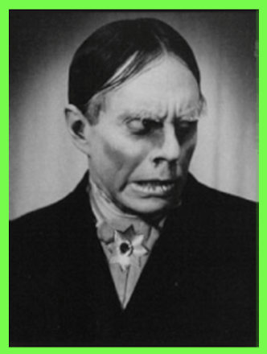

John Zacherle was a horror host, singer and voice actor most well known for his character "Roland/Zacherle"
Throughout his career he released multiple albums scoring the top 10 hit "Dinner With Drac". In later years
he worked with director Frank Henenlotter and had roles and cameos in his films including the role of the parasite
Aylmer in the movie Brain Damage.
Fun Facts:
• Dinner With Drac was banned by the BBC in 1958.
• He appeared on both Philadelphia and New York television.
• He had a cameo in the movie Frankenhooker where he plays a weatherman.